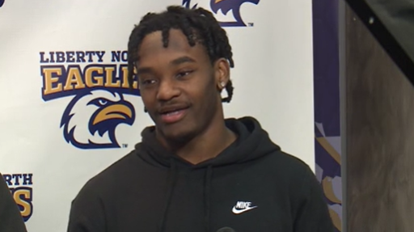

William Jewell Football Player MicahJo Barnett Dies After Medical Emergency During Season Opener
Sports | College Football
Published: Friday, August 28, 2026

William Jewell College is mourning the death of junior running back MicahJo Barnett, who died Saturday after suffering a medical emergency during the Cardinals’ season-opening football game in Liberty, Missouri.
Barnett became ill during the Division II matchup against Fort Lewis College at Greene Stadium. Medical personnel attended to him on the sideline for several minutes before he was transported by ambulance to a nearby hospital, where he was later pronounced dead, according to reports.
The game was stopped during the first quarter and ultimately canceled following the emergency.
Barnett, a Liberty native, had already made an impact in the contest before the medical emergency, scoring a touchdown for William Jewell.
The college confirmed his death Saturday but did not publicly disclose a cause.
“Forever a Cardinal,” William Jewell Athletics said in a social media message honoring Barnett. The school also expressed its condolences to his family, teammates, coaches, students and the broader Liberty community.
The university announced that a vigil would be held Saturday evening on the campus quad at 8 p.m. to remember Barnett and support those affected by his death. Students and employees were also encouraged to seek assistance through the college’s counseling services or chaplain’s office.
A standout from Liberty
Barnett’s connection to the Liberty community extended well beyond his college career.
He attended Liberty North High School, where he helped lead the Eagles to a state championship during his senior season. He also earned all-conference and all-state recognition after producing 1,450 all-purpose yards and 20 touchdowns.
At William Jewell, Barnett emerged as an important part of the Cardinals’ offense. He started five games during the 2025 season and led the team with 366 rushing yards on 71 carries, scoring four touchdowns.
His season was cut short by an injury, but he returned to the team as a junior this year and was part of the Cardinals’ plans entering the 2026 season.
His death has left teammates, coaches and members of the William Jewell community grieving at the beginning of what was supposed to be a new football season.
The Cardinals are not scheduled to return to action until Sept. 12, when they are slated to travel to Kentucky Wesleyan College.
For now, the focus at William Jewell has shifted away from football and toward remembering a young athlete whose career and life ended unexpectedly.
The school has not announced additional details about the medical emergency or Barnett’s cause of death.